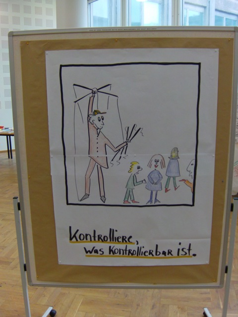
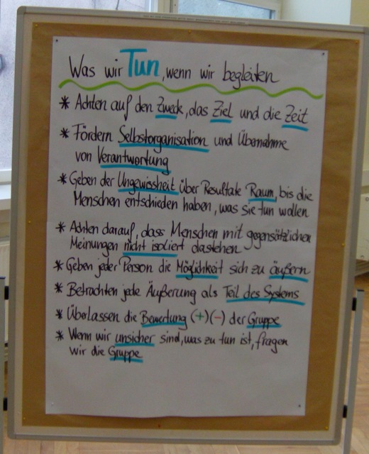
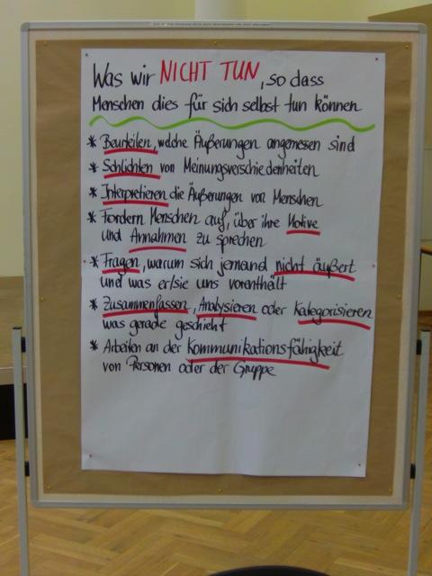
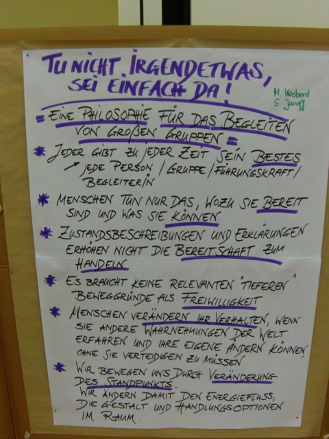

 Phew... anstrengend und interessant wars wieder. Thema heute war grob die tiefere Beschäftigung mit dem Thema "Welches Mindset hat der Großgruppen-Begleiter".
Der Triftige Unterschied ist nämlich, dass man beim Begleiten von Großgruppen ein völlig anderes Mindset benötigt als wenn man kleine Gruppen Begleitet. Und zwar deshalb, weil viele Techniken und Möglichkeiten die man vielleicht für kleine Gruppen noch benötigt für große Gruppen einfach nicht mehr funktionieren.
Zum Beispiel: Gestern Abend gab es vor dem Ende noch ein Stück Vortrag - die Moderatoren auf der Bühne und die Teilnehmer davor in Vortrags-Manier - in fünf Reihen.
Und das klappte nicht sehr gut. Die Moderatoren waren ohne Mikrofon kaum verständlich, die Schrift auf den Schaubildern nicht mehr Lesbar, wenn aus dem Publikum jemand etwas sagte hat man es nicht verstanden...
Heute Morgen dagegen war das Setting anders: Die Teilnehmer saßen in einem dreireihigen Kreis mit vielen Durchgängen, die Moderatoren hatten ein Stück des Kreises offen gelassen und dort ihre Pinwände aufgebaut.
Und der Unterschied war phänomenal - alle Probleme vom Vortrag waren damit Ausgeräumt. Mikrofone waren nicht mehr Notwendig, alle so nah dass die (etwas größer geschriebenen) Karten lesen konnten, Publikumsmeldungen konnten von allen verstanden werden, man hat auch gut gesehen wer etwas sagte... In kurz, eine Eindrucksvolle Demonstration was ein Unterschied eine etwas andere Technik macht - bzw. was passiert wenn man nicht geeignete Techniken einsetzt.
Heute der Tag startete nach einer Pause (sehr schönes Stilmittel!) und einer kurzen Einführung mit Murmelgruppen zu der Frage was wir für Probleme in der Großgruppen-Moderation schon hatten. Das Ziel dafür war solche Probleme zusammenzutragen um im nächsten Schritt in einem Fish Bowl nächer darauf einzugehen.
 Murmelgruppen sind eine Methode die man sehr schön in fast beliebigen anderen Settings einsetzen kann um diese Aufzulockern. Die Idee ist dass die Teilnehmer in kleinen Gruppen, 2-3 Personen, zu einer bestimmten Frage diskutieren. Damit erreicht man neben einer Aktivierung jedes Teilnehmers zu einer Frage eine wesentlich größere Aktivierung bzw. deutlich gesunkene Hemmschwellen der Teilnehmer Fragen zu stellen. Ausserdem haben noch einmal alle Teilnehmer die Chance neue Personen kennenzulernen.
Der Fish-Bowl danach funktionierte so, dass sechs Freiwillige sich in einen kleinen Kreis in der Mitte setzten um dort stellvertretend für die große Gruppe eine Diskussion zu führen. Der Clou dabei: Ein siebter Stuhl bleibt frei und darf jederzeit von einem der Zuschauer "genommen" werden um ein Statement oder eine Frage oder Hinweis einzubringen (Das Fische-Füttern). Die Idee ist, dass die Technik einer wesentlich größeren Gruppe eine Fruchtbare Diskussion erlaubt als wenn einfach jeder versuchte Mitzudiskutieren. Die Technik hat natürlich auch ihre Begrenzungen - und eine davon haben wir heute direkt erlebt. Wenn das Thema nämlich nicht klar ist, oder die "Abgesandten" nicht direkt jemanden haben den sie vertreten, dann sind die Zuschauer aussen herum schnell unzufrieden mit dem Ergebnis - allerdings ist das Ergebnis immer noch viel besser als wenn einfach jeder drauflos diskutieren würde.
 Wichtig für einen funktionierenden Fish-Bowl ist dabei eine klare Themen-Definition, bzw. ein klarer Auftrag an die "Abgeordneten" was sie Diskutieren sollen. Sehr gut funktioniert der Fish-Bowl auch zur Streit-Schlichtung, bzw. Diskussion zwischen zwei oder drei Gruppen - insbesondere bei emotionalen Themen. Vorteile hier sind dass die Stellvertreter die einzigen sind die Diskutieren, daher können die Personen aussen sich ganz auf die Argumente konzentrieren. Manche Teilnehmer kannten auch noch Variationen - eine Anmoderation um die Diskutanten besser zu fokussieren, eine Arbeitsgruppe pro Diskutant die sich auch während der Diskussion mit diesen Beraten darf, die freiwillige Aufgabe des Diskussionsplatzes wenn ein Diskutant das Gefühl hat dass er nichts mehr Beiträgt, und auch Varianten wo der siebte Stuhl belegt werden kann und dann freiwillig ein anderer Aufstehen muss bevor die Diskussion weitergehen darf.
Total klasse fand ich dabei auch eine Telnehmerin die sich auf den siebten Stuhl setzte und die Frage stellte, wie man denn damit umgehen könnte wenn sich Teilnehmer nicht an die Regeln halten sondern diese Einfach brechen. Das geniale daran: Danach blieb sie einfach sitzen und diskutierte im Fish-Bowl mit.
:-)
Eine Wundervolle Meta-Ebene - und es hat ganz schön lange gedauert bis die meisten Zuschauer dass überhaupt gemerkt haben was da los war. Großartig.
 Nach dem Mittagessen war dann noch etwas Vortrag über das Mindset eines Großgruppen-Begleiters und danach eine Übung in der dass gehörte Umgesetzt werden sollte.
Das war dann wieder in Kleingruppen á 5 Teilnehmer in denen einer der Moderator / Begleiter war. Und es war spannend. Das Zurücknehmen als Moderator um die Gruppe Arbeiten zu lassen ist fast in keiner der Gruppen geglückt - ja es gab sogar richtiggehend Verärgertheit über die unklare Definition der Aufgabe, oder die zu klare Definition der Aufgabe und die Kritik dass die Moderator-Rolle mit so viel Kontrolle aufgefüllt wurde.
Sehr Spannend.
Zum Abschluss dann noch eine sehr schön energetisierende Technik. Die Teilnehmer standen sich in zwei Kreisen gegenüber und jedes Paar hatte je eine Minute Zeit um dem Gegenüber zu einer gegebenen Frage ("Was hast Du heute mitgenommen", "Was hat dich Schmunzeln lassen", ...) etwas zu erzählen. Nach Ablauf der Zeit ging jeder einen Schritt nach Rechts und man hatte den nächsten Partner für die nächste Frage.
Phew - das muss reichen.